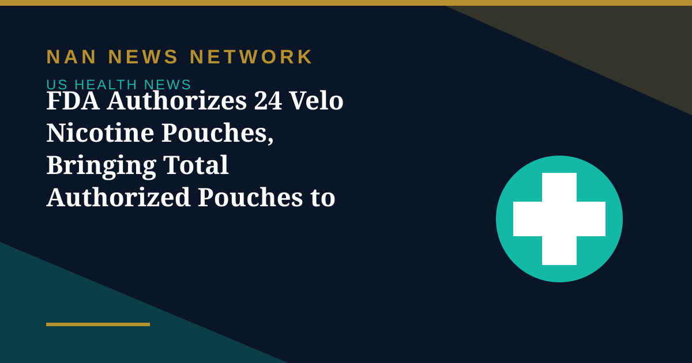

FDA Authorizes 24 Velo Nicotine Pouches, Bringing Total Authorized Pouches to 67

The US Food and Drug Administration authorized the marketing of 24 new nicotine pouch products on Friday, October 30, 2026, through the premarket tobacco product application pathway, the agency announced.
What was authorized
The authorized products are made by Modoral Brands Inc. under the Velo brand and all contain 4 mg of nicotine. They include three types of packaging for the Velo Mini Pouch and Velo Mini Pouch 2, each in four different flavors, reviewed under the agency's nicotine pouch pilot program, which enables a more streamlined review process.
Before any new tobacco product can be marketed legally in the US, it must undergo a rigorous scientific review in which the FDA considers the risks and benefits to the US population as a whole. The FDA's evaluation found that the newly authorized products contain lower levels of harmful and potentially harmful constituents compared to cigarettes and smokeless tobacco products, many of which were too low to be quantified, and no measurable levels of several carcinogenic constituents linked to increased oral cancer risk in smokeless tobacco users.
What it means — and does not mean
The agency said the authorizations underscore its commitment to providing greater access to products that can help adults aged 21 and older who smoke transition away from combusted cigarettes and smokeless tobacco products. Authorization is not an endorsement that the products are safe: nicotine pouches remain tobacco products, and the FDA's decision rests on a population-level assessment that they are appropriate for the protection of public health relative to the alternatives, not that they are risk-free.
To date, the FDA has authorized 67 nicotine pouches in total. The newly authorized products join that list, which the agency publishes on its authorized nicotine pouches page.
Sources: FDA, October 30, 2026
More on US Health News
- FDA Updates Menopause Hormone Therapy Labels for Three More Products in Women's Health Push
- FDA Declares Trader Joe's Chicken Wrap E. Coli Outbreak Over After 50 People Fell Ill
- FDA Recalls More Than 21,000 Bottles of Blood Pressure Drug Over Excess Active Ingredient
- FDA Recall: Miyoko's Plant-Based Butter Pulled in 10 States Over E. Coli, Yeast and Mold
- CDC: Drug-Resistant Germs Cause Nearly 9.7 Million US Infections a Year
- CDC Deputy Director Jennifer Shuford to Leave After Midterms, Report Says
- FDA Clears Cullinan's Velinotamig Trial for Autoimmune Blood Disorders
- Regeneron Extends US Ebola Supply Deal Worth About $270 Million Through 2031
- FDA Warns San Francisco Fermented Foods Maker Over Pathogen Risks and Labeling
- Salmonella Oyster Recall Expands: What to Know About the Little Wicomico Outbreak
- Graziers Raw Milk Cheese Recall: 13 Sick, 8 Hospitalized as FDA Issues Class I Warning
- CDC and FDA Performance Ratings Hit All-Time Lows in Gallup Poll